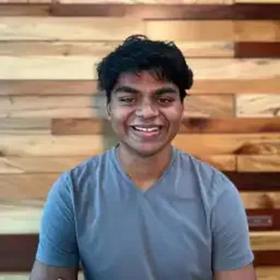

I am a second-year PhD student at UC Berkeley, where I am advised by Ken Goldberg. I received my bachelor's degree in Biomedical Engineering and Electrical Engineering from Vanderbilt in 2023 where I worked with Michael Miga on augmented reality for neurosurgical planning. I am currently funded by the NSF GRFP.
I am excited about surgical robotics for minimally invasive surgery and how recent advances in 3D vision, policy learning, and cloud robotics can improve patient care.
Email / Google Scholar / Twitter / Github
